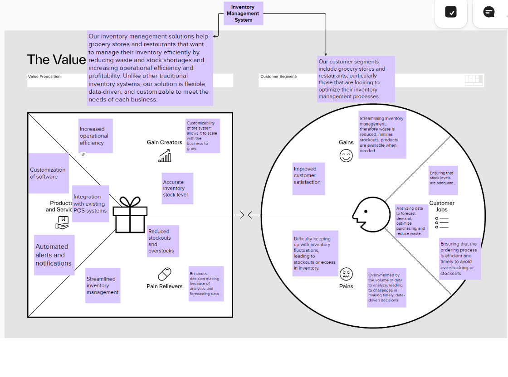
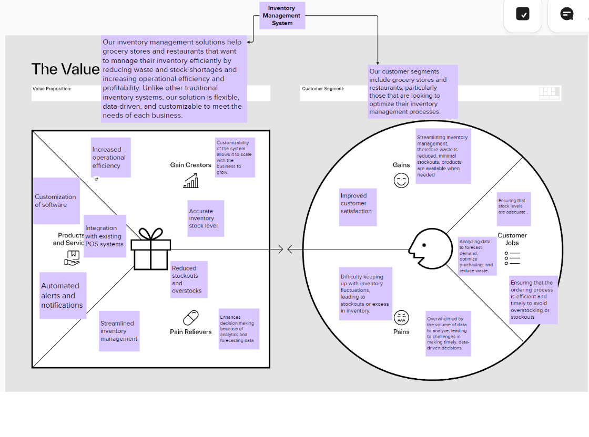
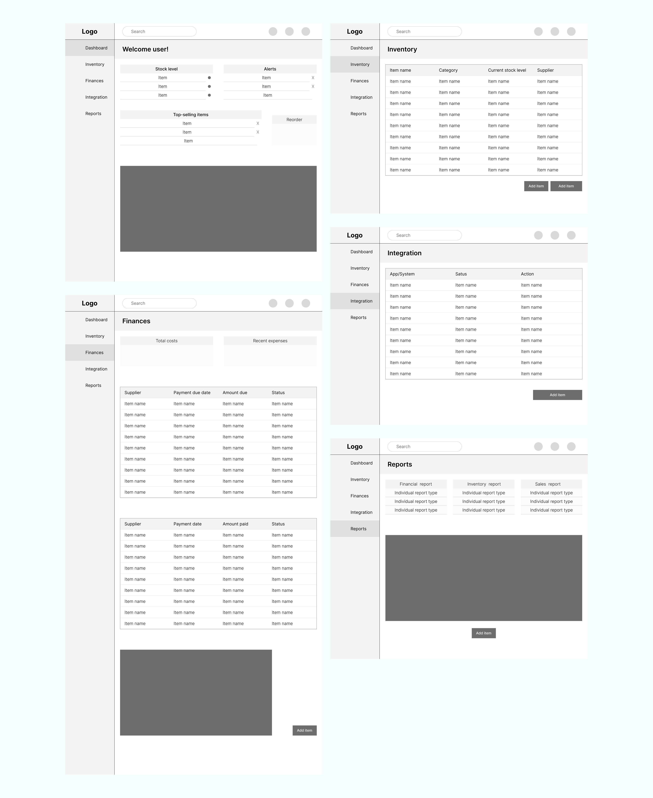

SmartShelf: A Case Study on Innovative Inventory Management
Timeline
Four weeks
Role
User research, personas, interviews, wireframes, final design
Tools
Figma
Overview
SmartShelf is an innovative inventory management system tailored to the food industry, designed to tackle the challenges faced by grocery stores and restaurants. Developed as part of the Prepr program, our team specifically chose to focus on operational efficiency, resulting in a user-friendly, scalable, and customizable solution that enhances inventory processes, reduces waste, and supports better decision-making through real-time data and AI-driven insights.
Introduction
Short description
SmartShelf is a customizable inventory management solution designed for grocery stores and restaurants. It was developed as part of the Prepr program. This project allowed us to apply our skills in a real-world scenario, focusing on solving the unique challenges faced by businesses in the food industry.
Problem
Short description
Managing inventory is a constant challenge in the fast-paced environment of the food industry, particularly in grocery stores and restaurants. Traditional inventory systems are often rigid, inefficient, and unable to provide real-time data, leading to stockouts, overstocking, and waste. The problem was apparent: How could we create a customizable inventory management solution that would streamline operations, reduce waste, and improve decision-making for small to large-scale food businesses?
Solution
Short description
SmartShelf is a fully customizable inventory management system that adapts to the
specific
needs of
grocery stores and restaurants. The system offers advanced data analytics, AI-driven
forecasting,
and real-time updates, allowing businesses to make informed decisions and optimize their
inventory.
Features:
- Customizable Dashboard: Users can prioritize the information they need most, from stock levels to alerts and top-selling items.
- Mobile Accessibility: The mobile app ensures that users can manage inventory on the go, with a design that keeps the interface clean and readable even on smaller screens.
- AI Integration: SmartShelf’s AI-powered tools predict demand with high accuracy, helping businesses avoid stockouts and reduce waste.
- Real-Time Alerts: Users receive instant notifications about low stock levels, allowing them to reorder products before they run out.
- Scalability: The system is designed to grow with the business, whether it's a single-location grocery store or a chain of restaurants.
Research
From our research, we found:
- In 2008, U.S. retail food stores lost about 10% of the total food supply, which amounted to approximately 43 billion pounds of food. Restaurants also face significant losses, with 4% to 10% of purchased food being wasted before it even reaches the customer due to spoilage or inefficiencies in kitchen processes (NRDC, 2012).
Inventory Management Challenges:
- Overstocking inventory, leading to increased costs and waste.
- Understocking, which can result in missed sales opportunities.
- Difficulty in obtaining accurate stock details, making it challenging to manage inventory effectively.
- Reliance on outdated or manual processes that are prone to errors.
- Rapidly changing customer demands, requiring businesses to be more agile and responsive.
Personas + Customer Journey Maps


 

Wireframes
Testing
Testing with users
To evaluate the effectiveness of our prototype, we conducted user
testing
sessions. During these sessions, users were shown our wireframes while we explained the
functionality of different screens. After our presentation, the users were given the opportunity
to
examine the wireframes more closely by zooming in for a detailed view.
Feedback received:
Overall, the feedback was positive, with users appreciating the product concept and wireframe
designs. However, one user pointed out the absence of a confirmation modal when clicking the
"Reorder" button, which could help prevent multiple unintended reorders. Another user suggested
that
the Integration page include recommended "ideal" integrations to enhance usability.
Observations and refinements:
During the testing process, we noticed a few design elements that were missing or could be
improved.
For example, some charts and images were not labelled, and the Integration page lacked a "Delete
integration" button. Additionally, we realized that the "Reorder" functionality could be
optimized.
Initially, the design required users to manually review and reorder items, but we decided that
making the "Reorder" option a clickable button would be more efficient. With the AI feature
tracking
stock levels, users would simply click the button to reorder all low-stock items. To ensure
accuracy, a confirmation modal would appear after the button is clicked, allowing users to
confirm
the reorder before proceeding.
Final designs
The final design

Gif of prototype:
REFLECTIONS
+ what I would do differently next time
While working on this project, I learned a lot, these include:
Looking back on this project, there are a few things that really stood out to me — both what worked well and what I’d change next time around.
What went well:
One of the strong points of this project was the research and the initial wireframe designs. We were able to spot key pain points for our target users early on, especially around inventory management and keeping track of stock levels in real-time. The feedback we got from testing was super valuable, and we made adjustments that made the final design more user-friendly.
What I would do differently:
- More customization: If I could go back, I’d focus on giving users even more options to customize things. For example, allowing them to drag, drop, hide, add, or remove widgets on the Dashboard would give them more control over how they use the product. I’d also want to let them create custom reports based on whichever metrics matter most to them so they can get greater insight into their business.
- Role-based permissions: Another thing I’d change is adding more flexibility around roles and permissions. Businesses should be able to assign roles and decide who gets access to certain features or data. This would help teams work more smoothly and protect sensitive info while letting everyone do their job effectively.
- Updating the UI: Visually, I’d want to modernize the UI a bit. Adding a more polished and contemporary look would help the product feel more professional and user-friendly. Little things like improving the typography, using a more cohesive colour palette, and ensuring the icons are consistent could make a big difference in how the product is perceived and used.
Overall, I think these changes would improve the product by giving users more control, streamlining workflows, and making the interface more appealing.